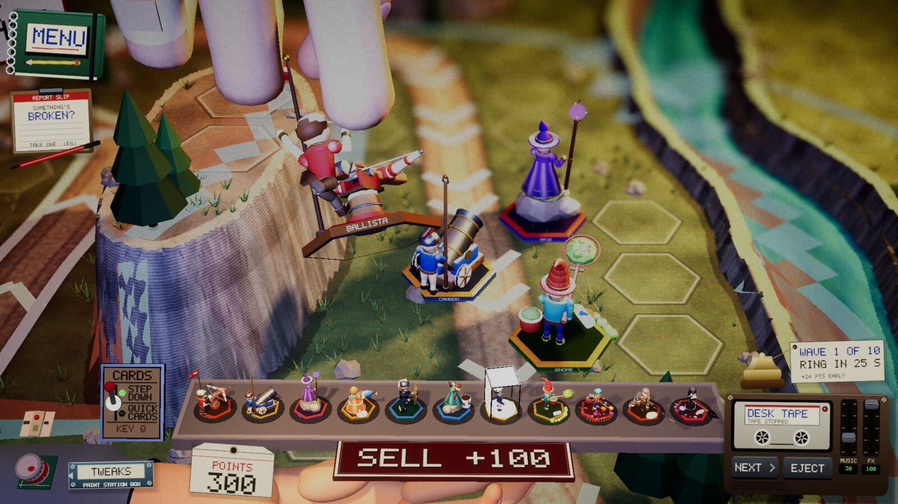
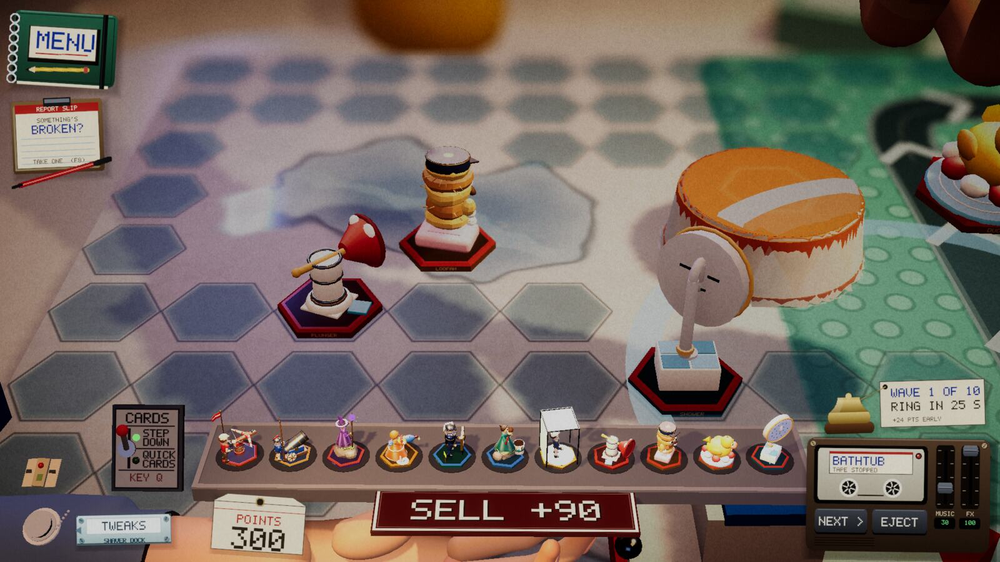
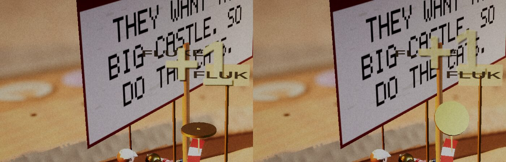

Devlog ·
A tester wanted collectible figures,
Build spots became hex tiles and every tower got a glossy hex base, on a tester's suggestion; the same hours moved table state into sessions, gave towers a way to pay Points, and turned up five tower-check failures.
Hex tiles and a plinth for every tower
A tester, Average Joe, suggested that build spots could be hex tiles, and that towers could stand on matching hex bases like collectible toy figures. The worker on issue 743 found that the small drilled dots were never geometry: every table paints them into its surface texture through one shared function. Replacing that function put hex markers on all sixteen tables at once, each in its own material: an inlaid line on wood, glazed tiles in the bathroom, a pressed groove in the sand, a printed sticker on fabric and cardboard.
Every tower mini now sits on a hex prism: a black foot, a glossy band in the tower's accent colour, a rim coloured by role (shooters red, lobbers orange, auras violet, and so on), the tower's name printed on the front and its affinity on the back. Because the base belongs to the mini, picking a tower up lifts both without any change to the hand code. While a figure is carried, free legal spots glow faintly.

The worker ran six look passes and several went against it. The first bathroom screenshot showed tiles so saturated they drowned the road, so the fill was cut from 78 to 50 percent. The glow was invisible in the first frames; the worker only saw it by comparing frames before and after a pick-up, then made it about twice as bright. Close-ups were blurred by depth of field and the dark top of the base hid brown accents, so it was lightened. One test carried the duck over the tower case, which the game reads as "drop to sell", and the camera followed it into a blur; the drag target was moved.

Whether the look is right is the owner's call, and the issue stays open for it.
A coin that left the frame
The worker on issue 548 gave the tower registry three new verbs the sandpit towers had been working around: pay Points with a coin pop, a hook that tells every kind of tower about each kill, and permission to speed a dude up rather than only slow it. The Sandcastle Flag, which used to count its neighbours' kills every frame and reach past the registry for the table's purse, moved over to them.
The probes passed on the first run. Making the result visible took the work: the first screenshots of the flag mid-wave showed the Points counter ticking, and no coin or "+1" anywhere. Cropped frames showed the coin spinning above the pole as intended, while the "+1" starts a few centimetres higher and rises out of the top of the frame. The pay point was lowered, and the next sequence caught a coin and a "+1" in the same frame as the counter.

Smaller things that landed
- The tray of minis on the 16:10 screen was being covered by the cassette radio. Its right end is now capped at the radio's left edge, so the tray shrinks from 0.61 to about 0.57 of the width there (issue 634). The worker could not see the price tags, because the overlay is not in offscreen captures.
- Borrowing a tower printed its kind number, 67, in logs for towers outside the original eleven. It now prints the tower's name (issue 535).
- Swapping to the sandpit on the Web build froze a frame for 3.7 seconds. After the paint went through the shared helper and the terrain skipped far segments, the same swap measured 320 to 450 ms (issue 605). The first Web measurement showed 1 s and 7 s frames everywhere; the measuring script had opened the game in a background tab, which the browser throttles. One run in six still read 857 ms while other workers were compiling shaders on the same machine.
- Seven more tables moved their per-game state into their own session classes. The bathroom worker's first check failed on frame time (53 ms) because two other players were running on the laptop; on a quiet machine it read 22.3 ms. The engine's sight query carries no game, so one static remains, filed as issue 774.
Five towers stopped working
The lead ran the whole tower check on the merged build and it failed in five places: Superglue and Airbrush Kid never fired, Gloss Coat and Dice Tower dealt damage but killed nothing, and the engine's Pull barely moved a dude. All had passed the day before, so the issue (783) lists the morning's merges as suspects. It is being diagnosed; no cause is claimed here.
What nobody has checked yet
- The hex look on screen, by the owner; the glow mid-carry; the Web build with the new bases; whether borrowed and ghost minis wear the bases.
- No shipped tower speeds a dude up yet; that verb has only been tried with a probe.
- The price tags and the borrowed-tower label text are on-screen overlays that the worker's captures could not show.
- The sandpit swap in real browsers, on phones, and swaps away from the sandpit.